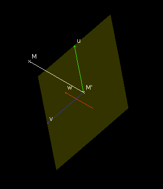
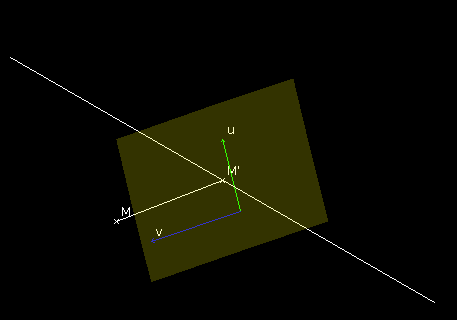
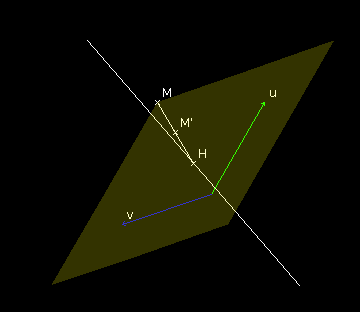
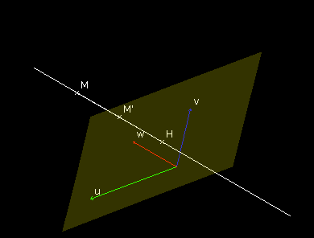

| Choisissez votre langue ! | Choose your language ! |
Définition
Dans tout ce qui suit A1 et A2 représentent des espaces affines sur un même corps K.f: A1 → A2 désigne une application de A1 dans A2.
Definition
In what follows A1 and A2 represent affine spaces over the same field K.f: A1 → A2 denotes a mapping from A1 into A2.
Pour tout système pondéré S=((M1,λ1),(M2,λ2), ... ,(Mn,λn)) de points de A1 de masse totale non nulle, si G est le barycentre de S alors f(G)=G' est le barycentre du système pondéré S'=((M'1,λ1),(M'2,λ2), ... ,(M'n,λn)) où pour chaque indice i 1 ≤ i ≤ n M'i=f(Mi). Nous résumerons cette propriété en disant que f 'conserve les barycentres '.
For any mass points system S=((M1,λ1),(M2,λ2) , ... ,(Mn,λn)) of points of A1 with nonzero total mass, if G is the barycenter of S then f(G)=G' is the barycenter of the system S'=((M'1,λ1),(M'2 ,λ2), ... ,(M'n,λn)) where for each index i 1 ≤ i ≤ n M'i=f(Mi). We will summarize this property by saying that f 'preserves barycenters '.
\( \displaystyle \overrightarrow{OG}=\frac{\alpha \overrightarrow{OA_{1}}+\beta \overrightarrow{OA_{2}}}{\alpha +\beta } \)
Alors on a également :\( \displaystyle \overrightarrow{O'G'}=\frac{\alpha \overrightarrow{O'A_{1}'}+\beta \overrightarrow{O'A_{2}'}}{\alpha +\beta } \)
où pour tout point M de A1, M' désigne l'image f(M) de M par f.\( \displaystyle \overrightarrow{OG}=\frac{\alpha \overrightarrow{OA_{1}}+\beta \overrightarrow{OA_{2}}}{\alpha +\beta } \)
We also have:\( \displaystyle \overrightarrow{O'G'}=\frac{\alpha \overrightarrow{O'A_{1}'}+\beta \overrightarrow{O'A_{2}'}}{\alpha +\beta } \)
where for any point M of A1, M' denotes the image f(M) of M by f.Exemples
Dans tout ce qui suit nous supposons que A1=A2=A, c'est à dire que l'espace de départ et l'espace d'arrivée sont confondus.E désigne l'espace vectoriel associé à A.
Translations
Examples
In what follows we assume that A1=A2=A, that is to say that the departure space and the arrival space coincide .E denotes the vector space associated with A.
Translations
Voici une application qui montre une translation de vecteur \( \displaystyle \overrightarrow{u} \) en action sur un système de 2 points avec son barycentre.
Vous pouvez faire varier le vecteur de translation \( \displaystyle \overrightarrow{u} \) en tirant son extrêmité.
Vous pouvez également déplacer les points A et B.
Vous pouvez aussi, avec les curseurs, faire varier les masses de A et B.
Here is an application that shows a translation of vector \( \displaystyle \overrightarrow{u} \) in action on a 2-points system with its barycentre.
You can vary the translation vector \( \displaystyle \overrightarrow{u} \) by dragging its end.
You can also move points A and B.
You can also, with the sliders, vary the masses of A and B.
Homothéties
Dilations (homotheties)
A tout point M elle associe le point M' tel que
\( \displaystyle \overrightarrow{OM'} \) = α \( \displaystyle \overrightarrow{OM} \)
At any point M it associates the point M' such that
\( \displaystyle \overrightarrow{OM'} \) = α \( \displaystyle \overrightarrow{OM} \)
Vous pouvez faire varier le rapport de l'homothétie avec un curseur de -2 à +2.
Vous pouvez également déplacer les points A et B.
Vous pouvez aussi, avec les curseurs, faire varier les masses de A et B.
You can vary the scale ratio with a slider from -2 to +2.
You can also move points A and B.
You can also, with the sliders, vary the masses of A and B.
Projections
Dans toute la suite nous supposons que E est de dimension finie et que B1 et B2 sont deux de A telles que leurs sous espaces directeurs E1 et E2 soit en , alors E=E1⊕E2.Il résulte de nos hypothèses que toute variété de direction E1 et toute variété de direction E2, se coupent en un point et un seul.
La projection d'axe B1 parallèlement à B2 est définie ainsi :
Projections
In the following we assume that E is of finite dimension and that B1 and B2 are two of A such that their directions spaces E1 and E2 are in , then E=E1⊕E2.It follows from our hypotheses that any manifold of direction E1 and any manifold of direction E2 intersect at one and only one point.
The projection on axis B1 parallel to B2 is defined as:
Projection sur un plan parallélement à une droite de vecteur directeur \( \displaystyle \overrightarrow{w} \)
Projection onto a plane parallel to a line with direction vector \( \displaystyle \overrightarrow{w} \)


Affinités
B1 et B2 sont comme ci-dessus.Soit cette fois α un scalaire quelconque et M un point de A. Soit H le projeté de M sur B1 parallèlement à B2 et soit M' le point tel que
\( \displaystyle \overrightarrow{HM'} \) =α \( \displaystyle \overrightarrow{HM} \)
.Directional scaling (stretching)
B1 and B2 are as above.Let this time α be any scalar and M a point of A. Let H be the projection of M onto B1 parallel to B2 and let M' be the point such that
\( \displaystyle \overrightarrow{HM'} \) =α \( \displaystyle \overrightarrow{HM} \)


Remarque 1
Quand α=0 on retrouve les projections vues plus haut.Remarque 2
Quand α=-1 on parle de symétrie d'axe B1 parallèlement à B2.Les symétries sont évidemment des involutions.
Applications non affines
Pour un exemple d'application non affine, voir .Cas du plan affine réel
On a vu que ℝ2 s'identifie au corps ℂ des .Un point M est ainsi identifié à son affixe complexe. Ainsi toute application f : M → M'=f(M) du plan dans lui-même (affine ou non) s'identifie à une application z'=f(z) de ℂ dans ℂ. On peut voir que les applications du type :
z → z'=az+b correspondent à des applications affines.
Pour une démonstration rigoureuse voir .
Il en est de même de z → z, et donc par composition de toute application du type z'=a z+b
Nous verrons un peu plus tard à quoi correspondent ces applications.
Note 1
When α=0 we find the projections seen above.Note 2
When α=-1 we speak of reflection of axis B1 parallel to B2.Reflections are obviously involutory.
Non-affine maps
For an example of a non-affine application, see .Case of the real affine plane
We have seen that ℝ2 is identified with the body ℂ .A point M is thus identified with its complex affix. Thus any map f : M → M'=f(M) of the plane into itself (affine or not) is identified with a map z'=f(z) from ℂ to ℂ. We can see that transformations of the type:
z → z'=az+b correspond to affine maps.
For a rigorous demonstration see .
It is the same for z → z, and therefore by composition of any application of the type z'=a z+b
We will see a little later what these applications correspond to.
|
Création Gilles Dubois
Created by Gilles Dubois
|
Janvier 2022
January 2022
|
Version mobile Jquery
Mobile Jquery version
|
|